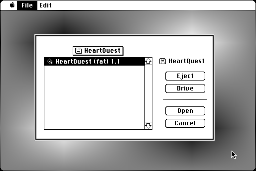

Download
strip.zip (53K) StripPPC 1.0a1 repackaged into a zipped hfs disk image and checksum file. The disk image can be mounted with Mini vMac.
strip.hqx (90K) StripPPC 1.0a1 in the original format.
copyright: In Phase Consulting
mod date: Jun 20, 1994
license: freeware
last known url
(program gone)
“Remove PowerPC code from a FAT application”. By Bill Woody. Source code is included. (Also includes Strip68K, but that isn't too useful for Mini vMac.)
This is not so useful for running in Mini vMac. A single write of zeroes is sufficient inside the emulated machine. But for the actual disk on the real machine, even this multiple pass erase running in the emulated machine may not be sufficient, because of issues like caching, and wear leveling on modern solid state drives.

If you find these downloads useful, please consider helping the Gryphel Project, which hosts them.
Here are the md5 checksums for the downloads, signed with Gryphel Key 5:
--------- GRY SIGNED TEXT --------- 9565490c2ef5a74ab9dd8c21a30c79e6 strip.zip 9a42ca3c3e77d88a6a56d89690daeb00 strip.hqx ------- BEGIN GRY SIGNATURE ------- Gry/4Xa8CFcUzxdN/OE4vp6AncimImlVb7+Jr9IQS1nQkxtkSKfDVtbGTlAtVibx 3A2TTPMD4ptY9s50T0zjlAOIrW1BUuTMQDyoblcI/O0In1ROECocxYWS8wCxUy8K zwtfTBaFGuGX+QvqblW3sYW4YQQCysSVoRuk287KUpzTq/OnHeOwkaNgysaf9ZPp -------- END GRY SIGNATURE --------